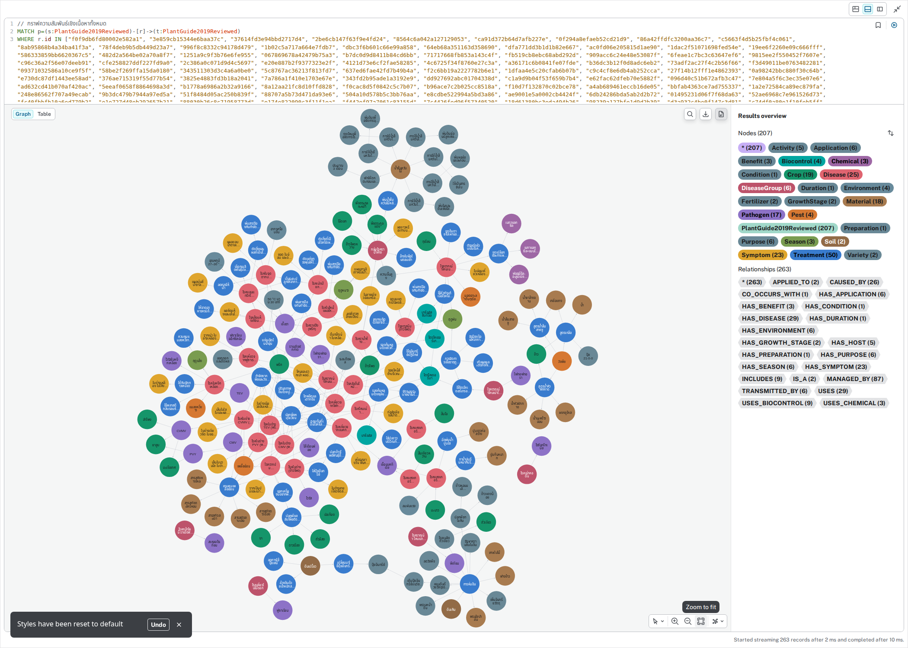
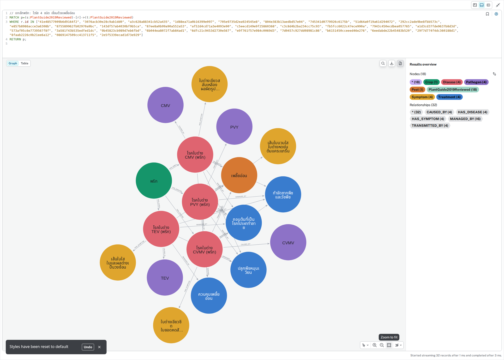

207 โหนด / 263 ความสัมพันธ์ — ครอบคลุมเนื้อหาจาก PDF ทั้ง 10 บท แสดงพืช โรค สาเหตุ อาการ วิธีจัดการ และจุดเชื่อมข้ามหัวข้อ โดยเลือกเฉพาะความสัมพันธ์เชิงเนื้อหา

18 โหนด / 32 ความสัมพันธ์ — เชื่อมโรคใบด่าง CVMV, PVY, CMV และ TEV กับเชื้อสาเหตุ อาการ เพลี้ยอ่อนซึ่งเป็นพาหะร่วม และวิธีจัดการร่วมกัน อ้างอิง PDF หน้า 30–33
